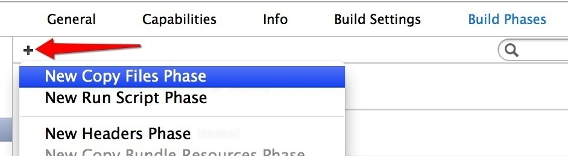

Apple 为了 iOS 平台的安全性考虑，是不允许动态链接非系统的框架的。因此在 app 开发中我们所使用的第三方框架如果是以库文件的方式提供的话，一定都是需要链接并打包进最后的二进制可执行文件中的静态库。最初级和原始的静态库是以 .a 的二进制文件加上一些 .h 的头文件进行定义的形式提供的，这样的静态库在使用时比较麻烦，我们除了将其添加到项目和配置链接外，还需要进行指明头文件位置等工作。这样造成的结果不仅是添加起来比较麻烦，而且因为头文件的路径可能在不同环境下会存在不一样的情况，而造成项目在换一个开发环境后就因为配置问题造成无法编译。有过这种经历的开发人员都知道，调配开发环境是一件非常让人讨厌和耗费时间的事情。
而 Apple 自己的框架都是 .framework 为后缀的动态框架，是集成在操作系统中的，我们使用这些框架的时候只需要在 target 配置时进行指明就可以，非常方便。
因为 framework 的易用性，因此很多开发者都很喜欢类似的“即拖即用，无需配置”的体验。一些框架和库的开发者为了使用体验一般会用一些第三方提供的方法来模拟地生成行为类似的框架，比如 Dropbox 或者 Facebook 的 iOS SDK 都是基于这种技术完成的。
但是要特别指出，虽然和 Apple 的框架的后缀名一样是
.framework，使用方式也类似，但是这些第三方框架都是实实在在的静态库，每个 app 需要在编译的时候进行独立地链接。
从 Xcode 6 开始 Apple 官方提供了单独制作类似的 framework 的方法，这种便利性可能会使代码的组织方式发生重大变化。我们现在可以在一个 app 项目中添加新的类型为 Cocoa Touch Framework 的 target，并在同一个项目中通过 import 这个 target 的 module 名字 (一般和这个 target 的名字是一样的，除非使用了一些像中杠 - 这样在 module 名中的非法字符)，来引入并进行使用。
这类框架在运行时是嵌入在 app 的 bundle 中进行动态链接的，我们的 app 本体以及各个 extension 都可以使用。这么做的一个明显的好处是我们可以在不同 target 之间很简单地重用代码，因为我们总会有一些在 app 本身和扩展中重复的东西，这时候将它们用框架的形式组织起来会是一个很好的选择。另一方面，就算你没有计划开发扩展，尝试将一部分代码分离到框架中也是有助于我们梳理项目的架构的。比如将所有的模型层组织为一个框架，如果你在这个过程中发现有困难的话，这很可能就是你需要重新考虑和重构项目架构的信号了。
但是这样制作的框架只能嵌入在自己的 app 中，如果我们希望将自己制作的框架提供给别人使用的话，我们可以新建一个专门生成框架的项目。接下来我们会通过一个简单的例子来告诉你应该怎么做，但是在这之前，需要先说明，使用框架项目并单独导出 framework 文件这种做法，是为 Objective-C 准备的。因为 Swift 暂时并不是稳定版本，而 Swift 的运行时也是经常改变，并且没有集成到操作系统中，所以官方并不推荐单独为 Swift 制作框架。我们虽然可以使用纯 Swift 制作可用的第三方库 (接下来你会看到要怎么做)，但是并不能保证它在所有的运行环境中都能良好工作。关于 Swift 代码的兼容性，可以参看相关章节的内容。
在当前 Swift 中，我们使用 Swift 框架的最佳实践是将整个框架项目 (包括其中源代码) 以项目依赖的方式添加到自己的项目中，并一起进行编译使用。本节所要讲述的是制作单独的编译好的框架文件供别人使用，虽然暂时还不建议将这种方法用在实际项目之中，但是这里着重想展现的是使用 Swift 制作框架文件的可能性。
当然你也可以使用 Objective-C 来制作框架，这样就没有这些限制了，因为本来这个特性现在暂时也只是为 Objective-C 准备的。使用 Objective-C 制作框架的过程和 Swift 大同小异，因为我们这是一本关于 Swift 的书籍，所以就只使用 Swift 来进行介绍了。
首先通过新建菜单的 Framework & Library 创建一个 Cocoa Touch Framework 项目，命名为 HelloKit，然后添加一个 Swift 文件以及随便一些什么内容，比如：
public class Hello {
public class func sayHello() {
print("Hello Kit")
}
}
注意我们在这里添加了 public 声明，这是因为我们的目的是在当前 module 之外使用这些代码。将运行目标选择为任一 iOS 模拟器，然后使用 Shift + Cmd + I 进行 Profiling 编译。我们可以在项目的生成的数据文件夹中 (使用 Window 菜单的 Organizer 可以找到对应项目的该文件夹位置) 的 /Build/Products/Release-iphonesimulator 里找到 HelloKit.framework。
如果直接使用
Cmd + B进行编译的话我们得到的会是一个 Debug 版本的结果，在绝大多数情况下这应该不是我们想要的，除非你是需要用来进行调试。
然后新建一个项目来看看如何使用这个框架吧。建立新的 Xcode 项目，语言当然是选择为 Swift，然后将刚才的 HelloKit.framework 拖到 Xcode 项目中就可以了。我们最好勾选上 Copy items if needed，这样原来的框架的改动就不会影响到我们的项目了。
接下来，我们在需要使用这个框架的地方加上对框架的导入和调用。为了简单，我们就在 AppDelegate.swift 的 didFinishLaunching 方法中对 sayHello 进行一次调用：
func application(application: UIApplication!,
didFinishLaunchingWithOptions launchOptions: NSDictionary!) -> Bool {
// Override point for customization after application launch.
Hello.sayHello()
return true
}
当然，别忘记在顶部加上 import HelloKit 来导入框架。
和其他的只做链接的添加框架的方式略有不同，最后一步我们还需要在编译的时候将这个框架复制到项目包中。在 Build Phases 选项卡里添加一个 Copy File 的阶段 (如图)，然后将目标设定为 Frameworks，将我们的 HelloKit.framework 添加到新建的阶段里，来指定 IDE 在编译时进行复制。

我想就这么多了，现在使用模拟器运行这个项目，我们应该可以在控制台中看到我们的输出了：Hello Kit。
但是故事还没有最终结束。我们刚才编译的时候只做了模拟器的版本，如果你尝试一下在 app 项目中将目标切换为真机的话，会发现根本无法编译，这是由于模拟器和实际设备所使用的架构不同导致的。我们需要回到框架项目中，将编译目标切换为 iOS Device，然后再次使用 Shift + Cmd + I 进行编译。这时我们可以在 Release-iphoneos 文件夹下得到真实设备可以使用的框架。最后我们通过 lipo 命令将适用于多个架构的二进制文件进行合并，以得到可以在模拟器和实际设备上通用的二进制文件：
lipo -create -output HelloKit \
Release-iphoneos/HelloKit.framework/HelloKit \
Release-iphonesimulator/HelloKit.framework/HelloKit
然后将得到的包含各架构的新的 HelloKit 文件复制到刚才的模拟器版本的 HelloKit.framework 中 (没错其实它是个文件夹)，覆盖原来的版本。最后再将 Release-iphoneos 中的框架文件里的 /Modules/HelloKit.swiftmodule 下的 arm.swiftmodule 和 arm64.swiftmodule 两个文件复制到模拟器版本的对应的文件夹下 (这个文件夹下最终应该会有 i386，x86_64，arm 和 arm64 四个版本的 module 文件)。我们现在就得到了一个通吃模拟器和实际设备的框架了，用这个框架替换掉刚才我们复制到 app 项目中的那个，app 应该就可以同时在模拟器和设备上使用这个自制框架了。
再次提醒，本文所述的用 Swift 构建框架项目，然后在其他项目中使用这个框架的做法并不是推荐做法。对于 Objective-C 来说这个做法没有什么太大问题，但是对于 Swift 的框架来说，因为现在 Swift 的解释和运行环境还没有非常稳定，因此在项目中使用非同项目 target 的框架的时候，很有可能项目和框架的 Swift 运行环境 有所差异。有时候这会导致不必要的问题和麻烦。